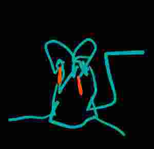

wren kennison c. 2024
I am a musician from NC.
I make a lot of things
[like songs and this website]
in some circles, they call these 'goods' and 'services'
but these are not goods and services
the colors of the text are not designed for your viewing pleasure
the instruments and drums are not mixed for your pleasurable listening
you might find the colors pleasing, or the mixing pleasurable
and it would be a complete accident
[and would still make me happy]